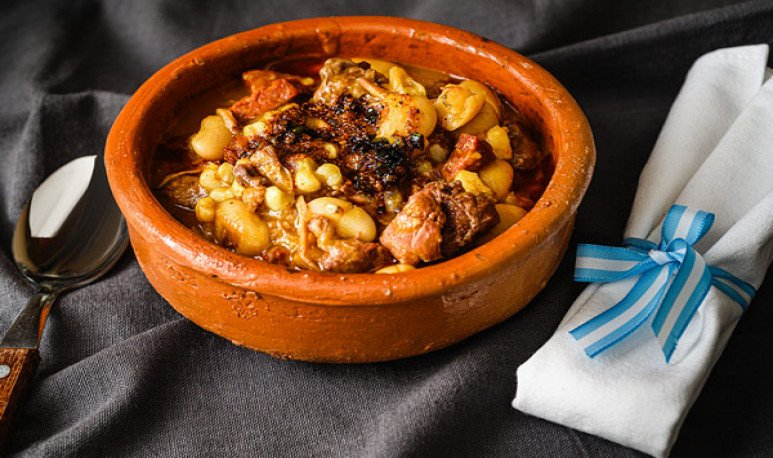
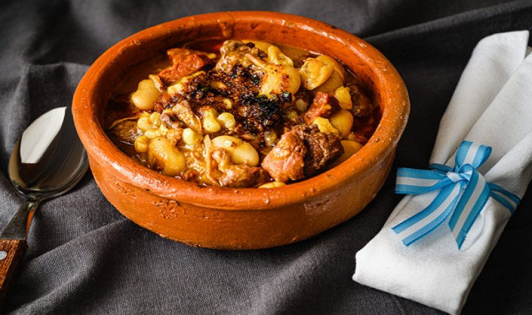

“La cocina siempre fue el alma del hogar, por eso con nuestros platos no solo buscamos transmitir los sabores y aromas del norte argentino, sino también degustar la historia que nos construye y nos desafía”
Soy un amante de mi tierra y de la cultura que
me vio nacer, también poseo la historia de mi
familia, migrantes europeos, y en esa mixtura
creo que hay un mundo muy vasto de sabores
y saberes.
Soy consciente de que el mejor
tamal se come en el mercado del pueblo y lo
hace Doña Felipa, con sus manos chiquititas y
su corazón enorme. No pretendo replicar eso que
la gente lleva dentro del alma, pero sí creo
que revalorizar nuestros ingredientes ancestrales,
saludables y procedentes de la tierra es fundamental
para seguir haciendo cultura
 
